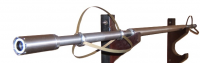
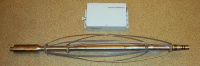
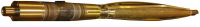
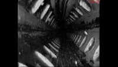
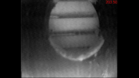
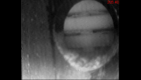

Обзор раздела
Прибор визуального контроля состояния скважин «КП-410ВК2»

Прибор предназначен для визуального контроля технического состояния эксплуатационных колонн, фильтров нагнетательных скважин и области забоя скважин.Основное достоинство прибора: видеосъемка позволяет реально обследовать и оценить техническое состояние вновь построенных и эксплуатируемых скважин вне зависимости от состояния и характеристик используемого каротажного кабеля.
При длительной эксплуатации скважины могут проявляться скрытые дефекты, не выявляемые при кратковременном опробовании скважины перед сдачей в эксплуатацию.
Перечень дефектов, обнаруживаемых видеосъемкой в процессе сдачи и эксплуатации скважины:
- смятие труб, трещины в колонне;
- отсутствие сальника между эксплутационной и фильтровой колоннами;
- деформация надфильтровой трубы;
- наличие песчаной пробки и зернистость материала;
- наличие заусенцев во внутренней части труб;
- наличие недоворота муфтовых соединений;
- качество сварных швов.
Характеристики
- Прибор работает через одножильный геофизический кабель длиной до 4000м.
- Быстродействие прибора обеспечивает проведение измерений со скоростью до 200 м/ч при шаге квантования по глубине, равном 10 см.
- Максимальная сила света системы освещения не менее 90 кД, степень освещенности объекта регулируется посредством изменения тока светодиодов.
- С наземного регистратора могут быть заданы уровень освещения, степень сжатия видеосигнала и частота передачи данных.
- Прибор оснащен съемными центраторами, обеспечивающих исследование скважин с диаметром 52…210мм.
- Диаметр прибора - 52мм
- Длина прибора 1,4м
- Рабочая температура -10...+60град.С
- Максимальное давление 25мПа
- Количество жил 1жила
- Масса 13кг
- проводить регистрацию данных, поступающих с прибора, в цифровом виде на персональный компьютер с одновременной визуализацией на экране монитора.
- управлять режимами работы прибора.
- проводить привязку изображения к глубине с точностью не хуже +/- 0.1м;
- осуществлять просмотр видеоизображения с возможностью сохранения отдельных кадров в формате *.bmp
- получить развернутое изображение скважины

Прибор предназначен для визуального контроля технического состояния эксплуатационных колонн, фильтров нагнетательных скважин и области забоя скважин.Основное достоинство прибора: видеосъемка позволяет в режиме реального времени обследовать и оценить техническое состояние вновь построенных и эксплуатируемых скважин.
Характеристики
- Прибор работает через трехжильный геофизический кабель длиной до 600м.
- Прибор работает в реальном времени с частотой кадров 30кадров в секунду.
- Максимальная сила света системы освещения не менее 90 кД, степень освещенности объекта регулируется посредством изменения тока светодиодов.
- Прибор оснащен съемными центраторами, обеспечивающих исследование скважин с диаметром 100…400мм.
- Диаметр прибора D50мм
- Длина прибора 965мм
- Диапазон рабочих температур -10+60град.С
- Максимальное давление 4мПа
- Число используемых жил - 3жилы
- Масса не более 5кг
- Пример видеосъемки в скважине:
Запись состояния фильтров водяной скважины водозабора
Запись состояния фильтров нагнетательной скважины на площадке ОАО "Хиагда"
Аварийная метановая газовая скважина г.Ленинск-Кузнецкий"

Прибор визуального контроля скважин «КП-512ВК» предназначен для визуального контроля технического состояния эксплуатационных колонн, фильтров нагнетательных скважин и области забоя скважин. Прибор обеспечивает фронтальную или боковую видеосъемку скважины видеокамерами черно-белого изображения. Прибор работает совместно с наземным каротажным регистратором типа «Геофит – 1108» или каротажной лабораторией «Геофит – 1003» через трехжильный геофизический кабель.-
Перечень дефектов, обнаруживаемых видеосъемкой в процессе сдачи и эксплуатации скважины:
- смятие труб, трещины в колонне;
- отсутствие сальника между эксплутационной и фильтровой колоннами;
- деформация надфильтровой трубы;
- наличие песчаной пробки и зернистость материала;
- наличие заусенцев во внутренней части труб;
- наличие недоворота муфтовых соединений;
- качество сварных швов;
- состояние фильтров.
1. Фронтальная камера:

2. Камера бокового обзора:


Запись скважины фронтальной и боковой камерой.Запись аварийной скважины, г. Железногорск.
Технические характеристики прибора
- 1. Технические характеристики видеокамер прибора: - эффективное число пикселей - 795(r) х596 (в), - разрешающая способность - 600 телевизионных линий (твл), - чувствительность - 0,1 лк, - рабочая температура - -10 С…+ 50 С.
- 2. Со скважинного прибора видеосигналы по каротажному кабелю через наземный преобразователь видеосигналов ПВ1 из комплекта прибора передаются в наземный регистратор.
- 3. Параметры системы освещения прибора: - фронтальная камера имеет четыре светодиода мощностью 4 Вт. - боковая камера имеет одну светодиодную матрицу мощностью 3 Вт.
- 4. Боковая камера имеет возможность съемки в стационарном положении или при вращении влево или вправо с различной скоростью.
- 5. Питание скважинного прибора, выбор видеокамеры, скорость и направление вращения боковой видеокамеры осуществляются от наземного регистратора.
- 6. Напряжение постоянного тока питания прибора - (150 10) В.
- 7. Условия работы прибора: максимальная температура окружающей среды -10 С…+ 50 С. наибольшее гидростатическое давление - 5 МПа.
- 8. Время непрерывной работы в условиях предельной температуры - 1 ч.
- 9. Габаритные размеры прибора: максимальный диаметр, мм - 54; максимальный размер раскрытия пружин, мм - 124 длина без транспортных заглушек, мм - 1101 длина с транспортными заглушками, мм - 1134
- 10. Масса прибора, не более, кг - 10,6
- 11. Габаритные размеры Преобразователя видеосигналов ПВ1, мм - 125х85х40.
- 12. Масса Преобразователя видеосигналов ПВ1, кг - 0,1
- 13. Прибор рассчитан на применение стандартного трехжильного каротажного кабеля длиной до 600м.
- 14. Программное обеспечение, поставляемое с прибором, позволяет: - проводить регистрацию данных прибора на персональный компьютер в функции глубины в формате *.avi с регулируемой степенью сжатия; - управлять режимами прибора; - проводить привязку изображения к глубине с точностью не хуже +/-0,1м; - осуществлять просмотр и преобразование ранее сохраненных данных.
- 15. Прибор «КП-512ВК» рассчитан на эксплуатацию в условиях, соответствующих: - по механическим воздействиям группе МС2-3 по ГОСТ 26116-84; - по климатическим параметрам группе КС4-1 по ГОСТ 26116-84.
- 16. Срок службы 3 года.